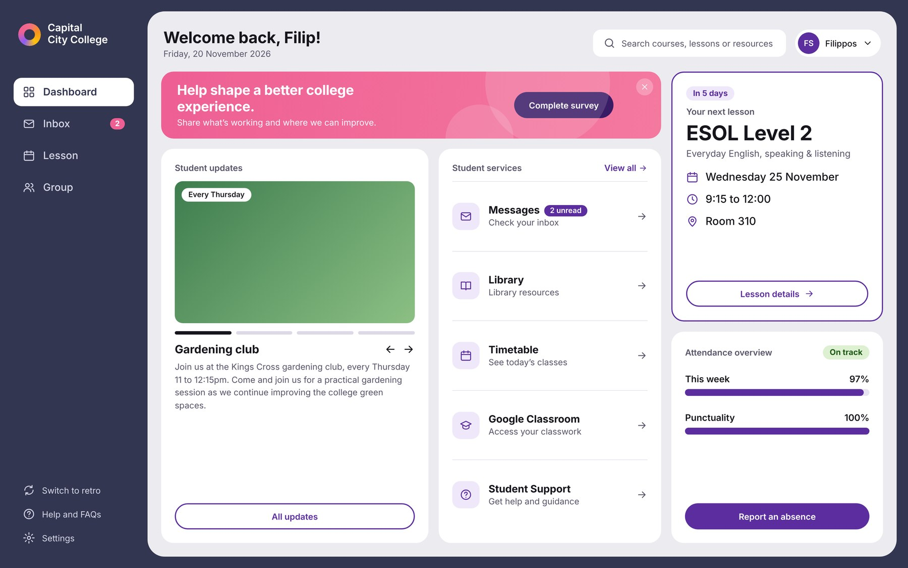

I redesigned the Capital City College student dashboard so students can find their next lesson, messages and attendance quickly, and report an absence without hunting for it. [Edit: make this one honest sentence about what is a concept and what is real.]

Problem. [What was hard for students: where things were, how long tasks took, what they missed.]
What I did. [Research you really ran, the structure you changed, the key screens and the absence feature.]
Result. [One honest sentence: tested with how many people, what you learned, or “concept, not yet tested”.]
[Explain your survey and interviews: how many responses, how you reached people, and what patterns you found. Use only real numbers.]
[Responses and main findings]
[How many people, what they said]
[What the existing portal did poorly]
The new dashboard puts the next lesson, messages and attendance first, with student services one tap away. [Edit: explain two or three decisions and the evidence behind each.]
The most common question, “where do I need to be?”, is answered at the top right with date, time and room.
Two simple bars and a status label replace a table of numbers.
The action sits with attendance, where students think about it.
Five clear links with a one-line description each.
[Be honest about testing and results. Add prototypes, GIFs or test findings here.]